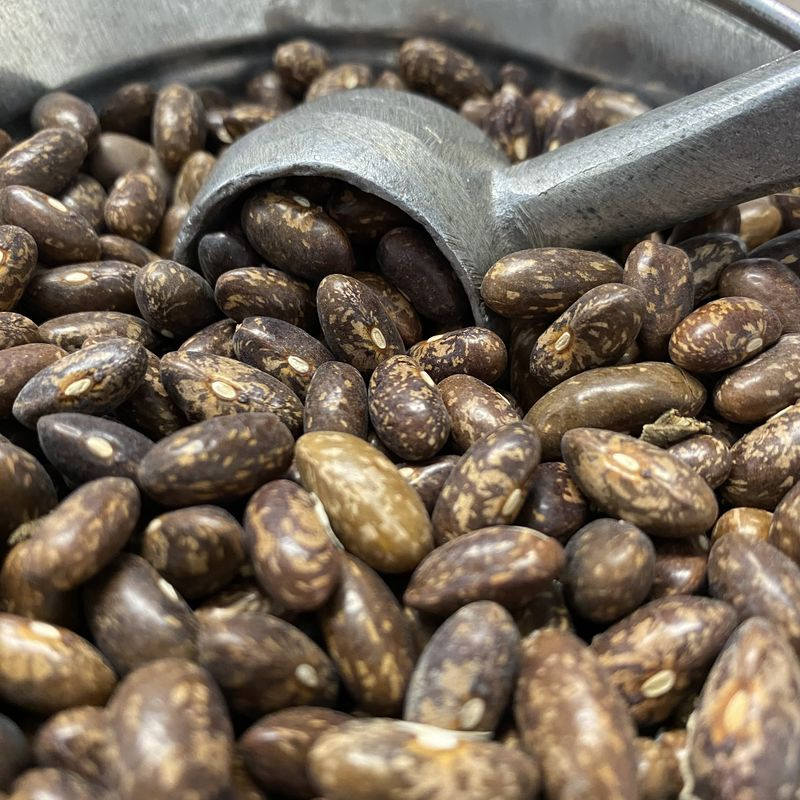

How to Start a Vegetable Garden in Indiana: A Complete Beginner’s Guide
Site, soil, layout and a first-year crop list that actually works in central Indiana clay and summer heat.

A first vegetable garden doesn't need to be big or fancy to be worth it. One well-placed bed, the right handful of crops, and a little attention every few days will put tomatoes, beans and salad on the table all summer. This guide walks through the decisions that matter most for central Indiana gardeners, in the order you'll make them.
Step 1: Pick the sunniest spot you have
Sun is the one thing you can't add later. Fruiting vegetables such as tomatoes, peppers, squash, cucumbers, beans and melons need at least six hours of direct sun, and they do noticeably better with eight or more. Leafy greens and root crops tolerate a bit less.
Spend a day watching your yard. Note where shadows from the house, trees and fences fall in the morning, at noon and late afternoon. Remember that trees leaf out fully by late May, so a spot that's sunny in April may be shaded by June.
Other things to look for:
- Close to water. If you have to drag a hose 200 feet, you won't water enough.
- Good drainage. Avoid spots where puddles linger after rain.
- Away from big trees. Tree roots compete hard for water and nutrients, and black walnuts release a compound (juglone) that harms tomatoes, peppers and potatoes growing near them.
- Visible from the house. You'll notice problems early, and you'll harvest more often.
Step 2: Understand your soil
Much of Montgomery County sits on heavy, clay-rich soils. Clay holds water and nutrients well, which is good, but it drains slowly, stays cold and wet in spring, and turns hard and cracked in summer drought.
Get a soil test
A soil test tells you your pH and nutrient levels so you add what's needed and nothing more. Most vegetables like a pH between about 6.2 and 6.8. Contact the Purdue Extension office in Montgomery County for soil testing options and how to take a good sample.
Add organic matter, every year
The single best thing you can do for any soil, clay or sand, is add organic matter. Compost, aged manure and shredded leaves loosen clay, help sandy soil hold water, and feed soil life. Work 2 to 3 inches of compost into the top 6 to 8 inches of soil when you build a new bed, then add another inch or two every year.
Never work wet soil
Squeeze a handful of soil. If it forms a sticky ball that doesn't crumble, it's too wet to dig or till. Working wet clay destroys its structure and leaves hard clods for the rest of the season. Wait a few days.
Step 3: Raised beds or in-ground?
Both work. Here's how they compare:
| Raised beds | In-ground | |
|---|---|---|
| Startup cost | Higher (lumber or kit, plus soil) | Low |
| Spring warm-up | Faster, so earlier planting | Slower |
| Drainage on clay | Excellent | Depends on your site |
| Watering | More often in summer | Less often |
| Best for | Small spaces, poor soil, easier access | Larger gardens, sprawling crops like squash and corn |
A raised bed 8 to 12 inches deep and no more than 4 feet wide (so you can reach the middle without stepping in) is ideal. Fill it with a blend of quality topsoil and compost. We carry bulk and bagged topsoil, compost and raised bed amendments.
Step 4: Choose a short list of crops
The most common beginner mistake is planting too many kinds of vegetables in too little space. Start with crops that are easy, productive and that your household actually eats.
Easy wins for a first garden
- Green beans: sow seed directly after frost, harvest in about 50 to 60 days, and keep picking.
- Zucchini and summer squash: one or two plants feed a family. Seriously, just one or two.
- Cherry tomatoes: more forgiving than big slicers, and productive until frost. See our tomato page for varieties like Sun Sugar and Supersweet 100.
- Lettuce and radishes: quick from seed in spring and fall.
- Cucumbers: grow them up a trellis to save space.
- Sweet peppers: compact and productive in warm weather.
- Kale and Swiss chard: harvest leaves for months.
- Herbs: basil, parsley and chives. Plant basil near the tomatoes; you'll want both at the same time.
Wait a year on these
Corn, melons, pumpkins and winter squash take a lot of room. Cauliflower and celery are fussy. Onions from seed and carrots in heavy clay can be frustrating. All are worth growing, just maybe not in year one.
Step 5: Plan your layout and spacing
Crowding is the second most common beginner mistake. Plants spaced too closely compete for light and water, and leaves stay wet, which invites disease.
| Crop | Spacing in a bed | Notes |
|---|---|---|
| Tomatoes (staked or caged) | 24–36 in. | Indeterminate types need tall support |
| Peppers | 18 in. | |
| Bush beans | 3–4 in. apart in rows 18 in. apart | Or sow in a block |
| Zucchini | 3 ft | Bushy and wide |
| Cucumbers on a trellis | 12 in. | |
| Lettuce | 6–12 in. | Closer for baby leaves |
| Radishes | 2 in. | |
| Basil | 12 in. |
Put tall crops like tomatoes, trellised cucumbers and pole beans on the north side of the garden so they don't shade shorter plants.
Step 6: Plant at the right time
Vegetables fall into two groups.
- Cool-season crops such as lettuce, spinach, peas, radishes, onions, potatoes, cabbage, broccoli and kale can go in from late March through April and tolerate light frost.
- Warm-season crops such as tomatoes, peppers, beans, squash, cucumbers, melons, sweet corn and basil wait until frost danger has passed and the soil has warmed, around mid-May here.
For specific dates, see our central Indiana planting calendar and the Purdue Vegetable Planting Calendar.
Transplants or seed?
Some crops are best bought as transplants, others are easy from seed:
- Buy as transplants: tomatoes, peppers, eggplant, broccoli, cabbage, cauliflower and most herbs. These need a long head start indoors.
- Sow from seed in the garden: beans, peas, radishes, carrots, beets, lettuce, spinach, corn, squash and cucumbers.
We sell both, including bulk seed by the scoop for beans, corn, peas and more.
Step 7: Water and mulch
Vegetables need about an inch of water a week, more in hot, windy weather. A rain gauge takes the guesswork out.
- Water deeply, less often. One or two good soakings encourage deep roots. Frequent light sprinkles keep roots shallow.
- Water the soil, not the leaves. Soaker hoses and drip irrigation are ideal, and wet leaves spread disease.
- Water in the morning when you can.
- Mulch. Once the soil warms in late May, spread 2 to 3 inches of straw (not hay, which is full of seeds) or shredded leaves around plants. Mulch keeps moisture in, keeps weeds down, and keeps soil from splashing onto leaves. That last one matters, because splashing soil spreads tomato leaf diseases.
Step 8: Feed, weed and watch
- Fertilize lightly. If you've added compost, many crops need only a modest application of balanced fertilizer at planting and again mid-season. Too much nitrogen gives you big leafy plants and few fruits, especially with peppers and tomatoes.
- Weed early and often. Ten minutes twice a week beats an afternoon every month. Weeds are easiest to pull when small and the soil is moist.
- Walk the garden. Look under leaves for eggs, beetles and caterpillars, and catch problems while they're small. Common Indiana pests include cucumber beetles, squash bugs, squash vine borers, tomato hornworms, Japanese beetles and cabbage worms.
- Get a diagnosis before you spray. Many problems aren't what they look like. Bring a sample or a photo to the greenhouse, or contact the Purdue Plant & Pest Diagnostic Lab.
Step 9: Harvest, and plant again
Harvesting often keeps plants producing. Pick beans while pods are slender, zucchini at 6 to 8 inches, cucumbers before they yellow, and peppers once they reach full size. They'll sweeten further if you leave some to color.
As spring crops finish, replant. Pull lettuce and peas in early summer and sow beans in their place. In late July and August, plant broccoli, kale, lettuce and radishes for a fall garden, which in central Indiana is often the most enjoyable harvest of the year.
A simple first-year plan for one 4×8 bed
| Section | Spring (April) | Summer (mid-May on) | Fall (August on) |
|---|---|---|---|
| North end | 2 tomatoes in cages, 1 basil | Leave tomatoes until frost | |
| Middle | Lettuce and radishes | 2 peppers, 1 zucchini | Kale and lettuce |
| South end | Peas on a short trellis | Bush beans (sow twice, 3 weeks apart) | Spinach and radishes |
Common first-year mistakes (and how to dodge them)
Almost every new vegetable gardener makes the same handful of mistakes. Knowing them ahead of time saves a season.
- Planting too much. A 4×8 bed that's weeded and watered beats a 30×30 plot that's lost to weeds by July. Start small and expand next year.
- Planting warm-season crops too early. Tomatoes, peppers, squash, cucumbers and basil sulk or die in cold soil. A week of patience in May pays off all summer.
- Crowding. Seedlings look tiny on planting day. Follow the spacing on the tag, even when the bed looks empty.
- Watering a little every day. Shallow, frequent watering grows shallow roots. Water deeply once or twice a week instead, more often in heat and for containers.
- Skipping mulch. Bare soil dries out, crusts over and sprouts weeds. Two or three inches of straw or shredded leaves fixes all three.
- Not harvesting often enough. Beans, cucumbers, zucchini and herbs slow down when fruit is left on the plant. Pick every day or two at the peak.
Keep notes
Write down what you planted, when, which varieties did well, and what didn't. Next spring, those notes are worth more than any book, this one included.
Ready to start? Browse our vegetable plants and seed, our herbs, and the full tomato guide. Or come see us. We'll help you pick the right varieties for your space.
Frequently asked questions
How big should a first vegetable garden be?
Small. A single 4-by-8-foot raised bed, or a 10-by-10-foot in-ground plot, is plenty for a first year. It’s enough for a few tomatoes, peppers, a row of beans, lettuce and herbs, and small enough to keep weeded and watered. Expand next year once you know how much time you have.
Do I need raised beds in Indiana?
No, but they help on heavy clay or poorly drained ground. Raised beds warm and drain faster in spring and let you start with good soil. In-ground gardens work well if you add organic matter every year and avoid working the soil when it’s wet.
What are the easiest vegetables to grow in Indiana?
Green beans, zucchini and summer squash, cherry tomatoes, lettuce, radishes, cucumbers, kale and Swiss chard are reliable for beginners. Herbs like basil, parsley and chives are easy too.
How much sun does a vegetable garden need?
At least six hours of direct sun, and eight or more is better for fruiting crops like tomatoes, peppers, squash and melons. Leafy greens and root crops can manage with four to six hours.
How often should I water my vegetable garden?
Aim for about an inch of water a week, from rain and watering combined, delivered in one or two deep soakings at the base of the plants. Mulch helps hold that moisture. Containers and raised beds dry out faster and need checking more often.
Further reading & sources
Questions about your own garden? Call us at (765) 364-0556 or stop by the greenhouse. Bring photos.
Plants in this article
Find them in the catalog


Keep reading